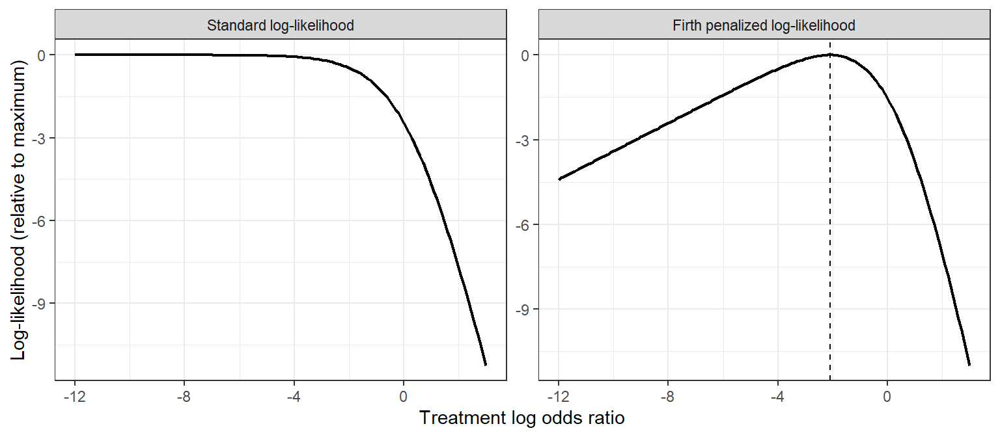
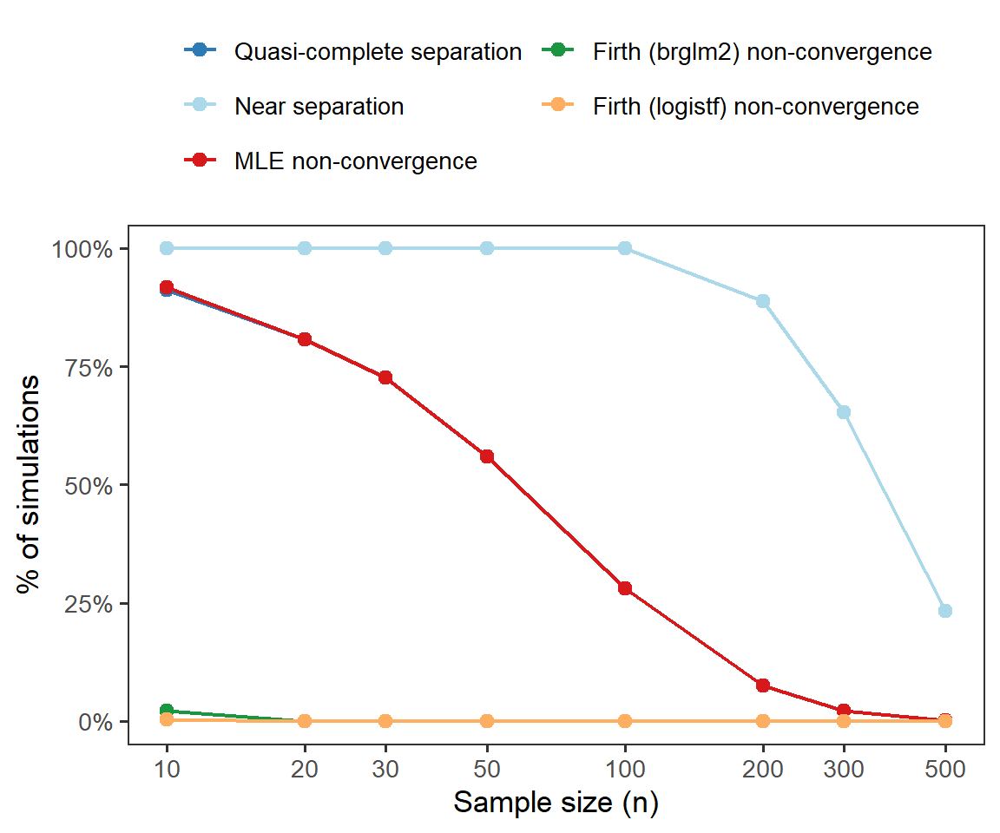
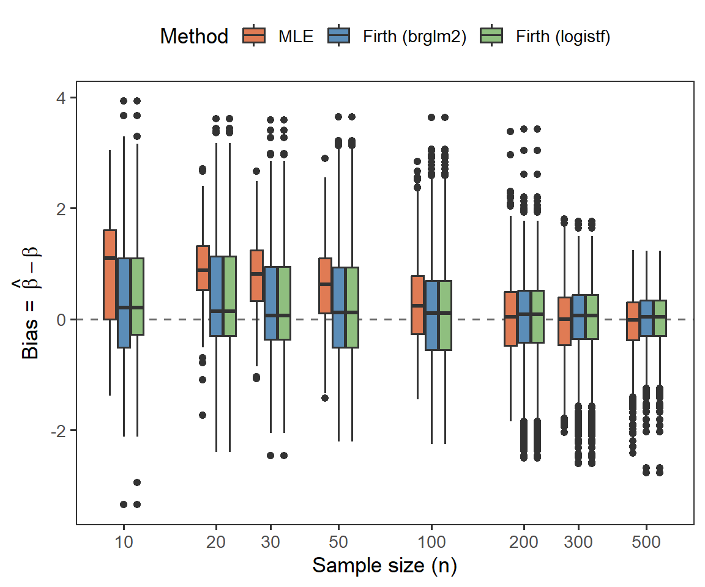
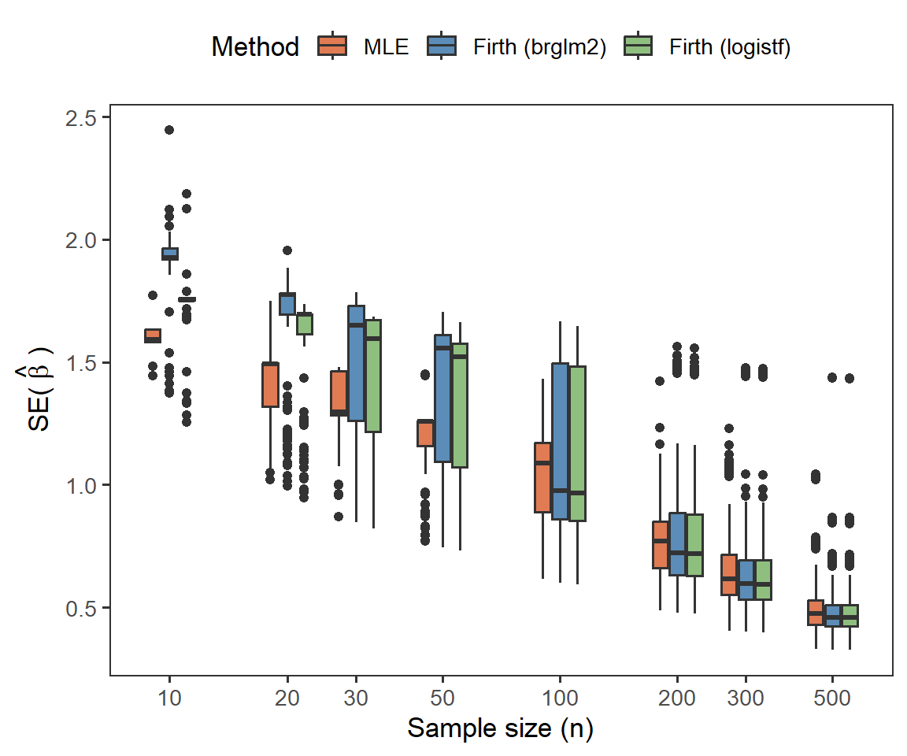
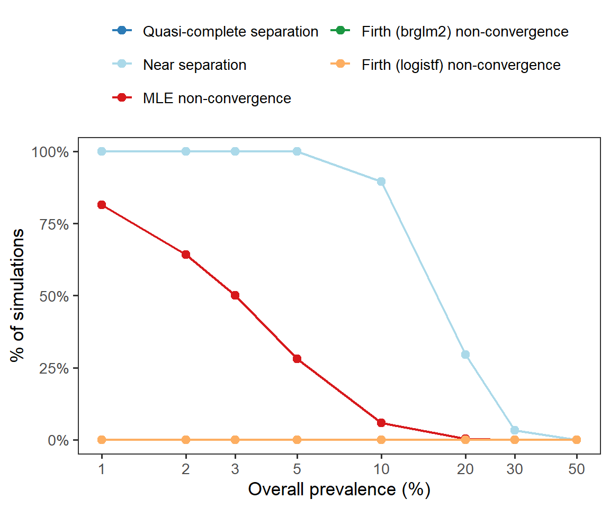
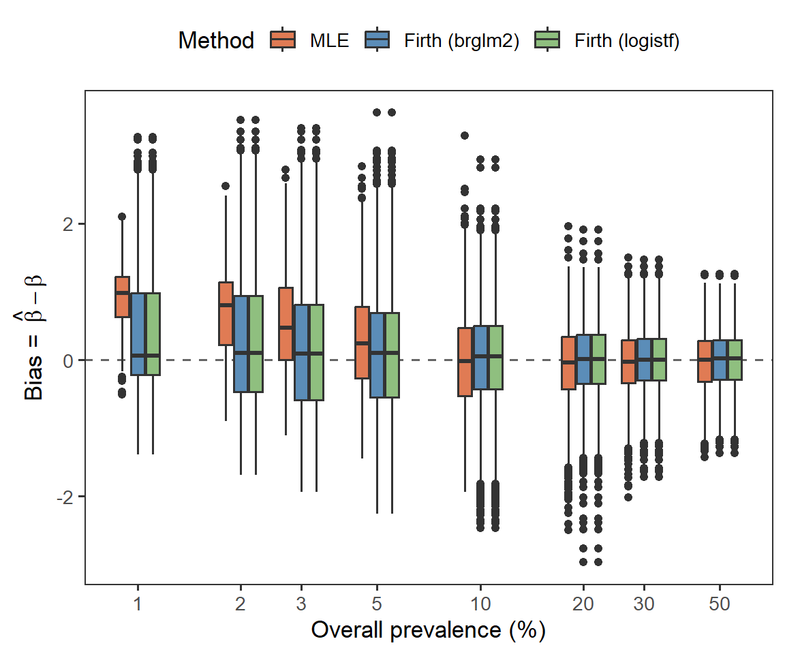
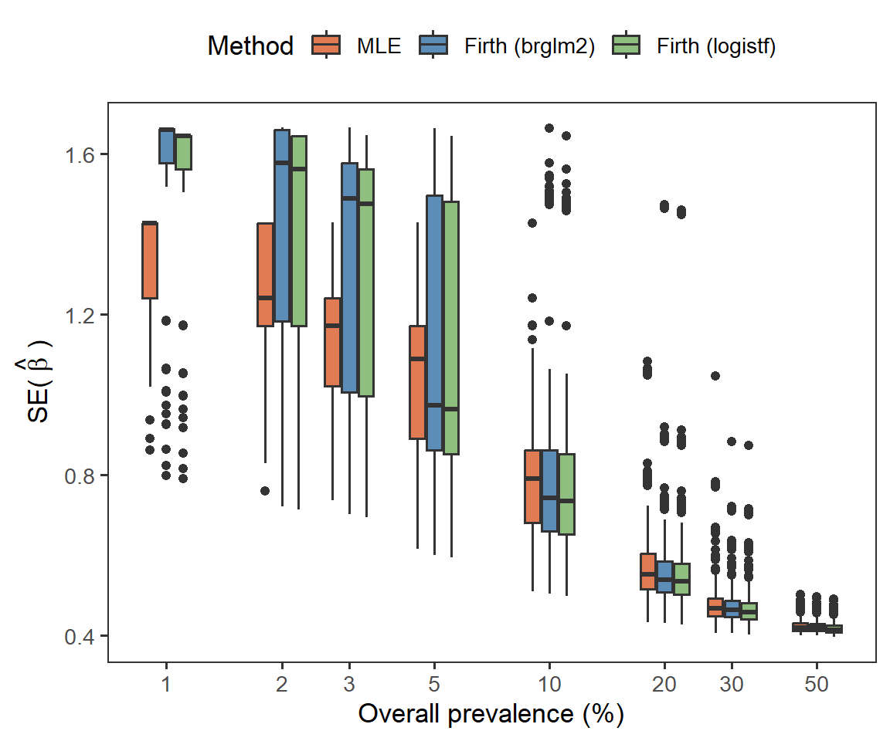

| No event | Event | |
|---|---|---|
| Treatment | 10 | 0 |
| Control | 0 | 10 |
| No event | Event | |
|---|---|---|
| Treatment | 10 | 0 |
| Control | 6 | 4 |
glm(..., family = binomial(), method = brglmFit) or the logistf package which also provides profile penalized-likelihood confidence intervals and tests.Separation occurs when a predictor (here, treatment) splits the outcomes so cleanly that the data contain no information about how large the effect could be.
In both cases the likelihood keeps increasing as the log odds ratio moves towards \(\pm\infty\), so there is no finite maximum likelihood estimate (MLE).
Outcome
|
||
|---|---|---|
| No event | Event | |
| Treatment | 10 | 0 |
| Control | 0 | 10 |
Outcome
|
||
|---|---|---|
| No event | Event | |
| Treatment | 10 | 0 |
| Control | 6 | 4 |
Assume we have the following data from a trial.
Outcome
|
|||
|---|---|---|---|
| No event | Event | Total | |
| Treatment | 22 | 0 | 22 |
| Control | 24 | 4 | 28 |
| Total | 46 | 4 | 50 |
The treatment seems highly effective!
The SAP specifies to conduct a logistic regression and estimate the odds ratio of treatment against control.
Call:
glm(formula = y ~ x, family = binomial, data = dat)
Coefficients:
Estimate Std. Error z value Pr(>|z|)
(Intercept) -1.7918 0.5401 -3.318 0.000908 ***
x -18.7743 3780.1276 -0.005 0.996037
---
Signif. codes: 0 '***' 0.001 '**' 0.01 '*' 0.05 '.' 0.1 ' ' 1
(Dispersion parameter for binomial family taken to be 1)
Null deviance: 27.877 on 49 degrees of freedom
Residual deviance: 22.967 on 48 degrees of freedom
AIC: 26.967
Number of Fisher Scoring iterations: 19However, the data have quasi-complete separation. Note the large treatment effect estimate and its standard error. Additionally, there is a warning about fitted probabilities being numerically 0 or 1. These are the typical signs of separation.
With a single binary predictor, an empty cell in the 2x2 table is easy to spot. With several covariates it is not. The detectseparation package can check the model formally.
The output states whether separation was detected and which coefficients are infinite.
In logistic regression, let \(Y_i \in \{0,1\}\) with \[ \text{logit}(\Pr(Y_i = 1 \mid \mathbf{x}_i)) = \mathbf{x}_i^\top \boldsymbol{\beta}, \]
and let \(\ell(\boldsymbol{\beta})\) denote the log-likelihood. The MLE \(\hat{\boldsymbol{\beta}}\) is consistent but carries a finite-sample bias of order \(O(n^{-1})\): \[ \text{Bias}(\boldsymbol{\beta}) = \mathrm{E}[\hat{\boldsymbol{\beta}} - \boldsymbol{\beta}] = \frac{\mathbf{b}(\boldsymbol{\beta})}{n} + O(n^{-2}). \]
For sparse or imbalanced data this bias inflates coefficient magnitudes away from zero. Under complete or quasi-complete separation the likelihood is monotone, the MLE does not exist, and the estimate diverges to \(\pm\infty\).
Firth (1993) proposed eliminating the \(O(n^{-1})\) bias term by augmenting the log-likelihood with half the log-determinant of the Fisher information matrix \(\mathcal{I}(\boldsymbol{\beta})\): \[ \ell^*(\boldsymbol{\beta}) = \ell(\boldsymbol{\beta}) + \tfrac{1}{2}\log|\mathcal{I}(\boldsymbol{\beta})|. \]
This is equivalent to placing Jeffreys’ invariant prior \(p(\boldsymbol{\beta}) \propto |\mathcal{I}(\boldsymbol{\beta})|^{1/2}\) on the coefficients. Maximising \(\ell^*\) gives the modified score equation \[ \mathbf{U}^*(\boldsymbol{\beta}) = \mathbf{U}(\boldsymbol{\beta}) + \mathcal{I}(\boldsymbol{\beta})\,\mathbf{b}(\boldsymbol{\beta}) = \mathbf{0}, \] which by construction subtracts the first-order bias, leaving residual bias of \(O(n^{-2})\).
The penalty serves a second role under separation: as \(\|\boldsymbol{\beta}\| \to \infty\) the term \(\tfrac{1}{2}\log|\mathcal{I}(\boldsymbol{\beta})|\) decreases fast enough to make \(\ell^*\) concave with a finite maximum, so penalized estimates always exist and are finite.
The figure below illustrates this for the example data. For each value of the treatment log odds ratio, the intercept is set to its best value and the (penalized) log-likelihood is plotted relative to its maximum. The standard log-likelihood keeps rising as the log odds ratio decreases and never reaches a peak, so the MLE does not exist. The Firth penalty turns it into a curve with a clear maximum.

Going back to the example, we see that this fixes the issue.
# install.packages("brglm2") # if not already installed
library(brglm2)
m_firth <- glm(y ~ x, family = binomial, data = dat, method = "brglmFit")
summary(m_firth)
Call:
glm(formula = y ~ x, family = binomial, data = dat, method = "brglmFit")
Deviance Residuals:
Min 1Q Median 3Q Max
-0.5807 -0.5807 -0.2097 -0.2097 1.9304
Coefficients:
Estimate Std. Error z value Pr(>|z|)
(Intercept) -1.695 0.522 -3.247 0.00117 **
x -2.112 1.552 -1.361 0.17365
---
Signif. codes: 0 '***' 0.001 '**' 0.01 '*' 0.05 '.' 0.1 ' ' 1
(Dispersion parameter for binomial family taken to be 1)
Null deviance: 27.920 on 49 degrees of freedom
Residual deviance: 23.967 on 48 degrees of freedom
AIC: 27.967
Type of estimator: AS_mixed (mixed bias-reducing adjusted score equations)
Number of Fisher Scoring iterations: 5The coefficients are on the log-odds scale. To report an odds ratio, exponentiate the estimate and its confidence interval. Note that confint() on a brglmFit object gives Wald intervals, which can be unreliable with so few events.
OR 2.5 % 97.5 %
0.120987661 0.005772634 2.535760032 For profile-likelihood confidence intervals, the logistf package can be used instead. It fits Firth regression and by default (pl = TRUE) computes profile penalized likelihood intervals.
# install.packages("logistf") # if not already installed
library(logistf)
m_logistf <- logistf(y ~ x, data = dat)
# odds ratio with profile-likelihood 95% CI
exp(cbind(OR = coef(m_logistf), confint(m_logistf)))["x", ] OR Lower 95% Upper 95%
0.120987654 0.000893939 1.234081715 The estimated odds ratio for treatment is finite and the interval is wide. It still includes 1, which honestly reflects how little information 4 events in 50 subjects carry. The following table summarizes these methods and their estimates.
| Method | Package | log OR | SE | OR | 95% CI | CI type |
|---|---|---|---|---|---|---|
| MLE | base (glm) | -18.8 | 3.78e+03 | 7.02e-09 | ( 0, Inf) | Wald |
| Firth (brglm2) | brglm2 | -2.11 | 1.55 | 0.121 | (0.00577, 2.54) | Wald |
| Firth (logistf) | logistf | -2.11 | 1.52 | 0.121 | (0.000894, 1.23) | Profile |
For each scenario, \(N_\text{sim} = 2{,}000\) datasets are generated under a logistic regression model with a single binary predictor \(X \sim \text{Bernoulli}(0.5)\) and true log-odds ratio \(\beta = \log(1/3)\). The intercept is chosen to match a target marginal prevalence. For each dataset, three estimators are fitted. The standard MLE (glm), Firth regression via brglm2 (glm(..., method = "brglmFit")) and Firth regression via logistf. The following quantities are recorded per replicate.
| Metric | Definition |
|---|---|
| Quasi-complete separation | Exactly one level of \(X\) has a constant outcome (all 0 or all 1). |
| Near separation | At least one cell of the \(2 \times 2\) table contains fewer than 5 subjects. |
| MLE non-convergence | The MLE coefficient or its standard error exceeds 10 in absolute value or the model fails entirely. |
Firth (brglm2) non-convergence |
Same criterion applied to the brglm2 Firth estimator. |
Firth (logistf) non-convergence |
Same criterion applied to the logistf Firth estimator. |
| Bias | Estimated \(\hat\beta\) minus the true \(\beta\), computed only when the respective model converges. |
| SE | Standard error of \(\hat\beta\), computed only when the respective model converges. |
Notes. Complete separation was also recorded, but it never occurred in any of the simulated datasets and is therefore not shown. The brglm2 and MLE standard errors are the usual model-based standard errors of glm. For logistf, the standard error is taken from the penalized likelihood fit. In the separation figures the MLE non-convergence and quasi-complete separation lines overlap completely.
Two simulation scenarios are considered.


brglm2 and logistf). Marginal prevalence fixed at 5%.

brglm2 and logistf). Marginal prevalence fixed at 5%.


brglm2 and logistf). Sample size fixed at 100.

brglm2 and logistf). Sample size fixed at 100.
brglm2 and logistf gave similar estimates in the simulation scenarios.Prespecify Firth logistic regression in the SAP when separation is plausible, for example for small sample sizes or a rare outcome. Additionally, in our simulations it performed no worse than the MLE when events were not rare.
Template code (replace outcome, treatment and covariates with your variables).
library(logistf)
# Fit Firth regression
fit <- logistf(outcome ~ treatment + covariate1 + covariate2, data = dat)
# Odds ratios with profile-likelihood 95% CI
exp(cbind(OR = coef(fit), confint(fit)))
# Alternative: brglm2 (note: confint() gives Wald intervals)
# library(brglm2)
# fit <- glm(outcome ~ ., family = binomial, data = dat, method = "brglmFit")Suggested SAP wording (adapt as needed):
The treatment effect will be estimated as an odds ratio using logistic regression with Firth’s bias-reduction (R package
logistf), because few events are expected with 95% CIs based on the profile penalized likelihood.
Points to consider
logistf package.brglm2 package (Kosmidis and Firth 2021) implements bias-reduction for the full family of generalized linear models, not only logistic regression. The method is invoked by passing method = "brglmFit" directly inside the standard glm() call, requiring no change to the model formula or the rest of the analysis workflow.logistf package (Heinze, Ploner, and Jiricka 2024), which also provides profile likelihood confidence intervals and tests (the default).coxphf package (Heinze et al. 2023) fits Cox regression with Firth’s penalization of the partial likelihood.Variations of the penalty exist. Specifically, there is also an extended Firth approach to a general mean-bias-reduction framework (Kosmidis and Firth 2009).
R version 4.5.2 (2025-10-31 ucrt)
Platform: x86_64-w64-mingw32/x64
Running under: Windows 11 x64 (build 22631)
Matrix products: default
LAPACK version 3.12.1
locale:
[1] LC_COLLATE=English_Australia.utf8 LC_CTYPE=English_Australia.utf8
[3] LC_MONETARY=English_Australia.utf8 LC_NUMERIC=C
[5] LC_TIME=English_Australia.utf8
time zone: Europe/Zurich
tzcode source: internal
attached base packages:
[1] stats graphics grDevices utils datasets methods base
other attached packages:
[1] kableExtra_1.4.0 knitr_1.51 logistf_1.26.1
[4] brglm2_1.0.1 data.table_1.18.2.1 ggplot2_4.0.1
loaded via a namespace (and not attached):
[1] gtable_0.3.6 shape_1.4.6.1 xfun_0.56
[4] formula.tools_1.7.1 htmlwidgets_1.6.4 lattice_0.22-7
[7] numDeriv_2016.8-1.1 vctrs_0.7.1 tools_4.5.2
[10] Rdpack_2.6.5 generics_0.1.4 enrichwith_0.4.0
[13] tibble_3.3.1 pan_2.0 pkgconfig_2.0.3
[16] jomo_2.7-6 Matrix_1.7-4 RColorBrewer_1.1-3
[19] S7_0.2.1 lifecycle_1.0.5 stringr_1.6.0
[22] compiler_4.5.2 farver_2.1.2 textshaping_1.0.4
[25] statmod_1.5.1 codetools_0.2-20 htmltools_0.5.9
[28] yaml_2.3.12 glmnet_4.1-10 mice_3.19.0
[31] pillar_1.11.1 nloptr_2.2.1 tidyr_1.3.2
[34] MASS_7.3-65 reformulas_0.4.3.1 iterators_1.0.14
[37] rpart_4.1.24 boot_1.3-32 foreach_1.5.2
[40] mitml_0.4-5 nlme_3.1-168 tidyselect_1.2.1
[43] digest_0.6.39 stringi_1.8.7 dplyr_1.2.1
[46] purrr_1.2.1 labeling_0.4.3 splines_4.5.2
[49] operator.tools_1.6.3.1 fastmap_1.2.0 grid_4.5.2
[52] cli_3.6.5 magrittr_2.0.4 survival_3.8-3
[55] broom_1.0.12 withr_3.0.2 scales_1.4.0
[58] backports_1.5.0 rmarkdown_2.30 otel_0.2.0
[61] nnet_7.3-20 lme4_1.1-38 evaluate_1.0.5
[64] rbibutils_2.4.1 viridisLite_0.4.3 mgcv_1.9-3
[67] nleqslv_3.3.7 rlang_1.1.7 Rcpp_1.1.1
[70] glue_1.8.0 xml2_1.5.2 svglite_2.2.2
[73] rstudioapi_0.18.0 minqa_1.2.8 jsonlite_2.0.0
[76] R6_2.6.1 systemfonts_1.3.1 logistf: Firth’s Bias-Reduced Logistic Regression. https://CRAN.R-project.org/package=logistf.
coxphf: Cox Regression with Firth’s Penalized Likelihood. https://doi.org/10.32614/CRAN.package.coxphf.